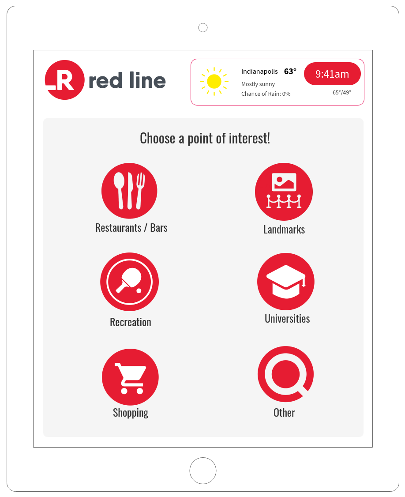
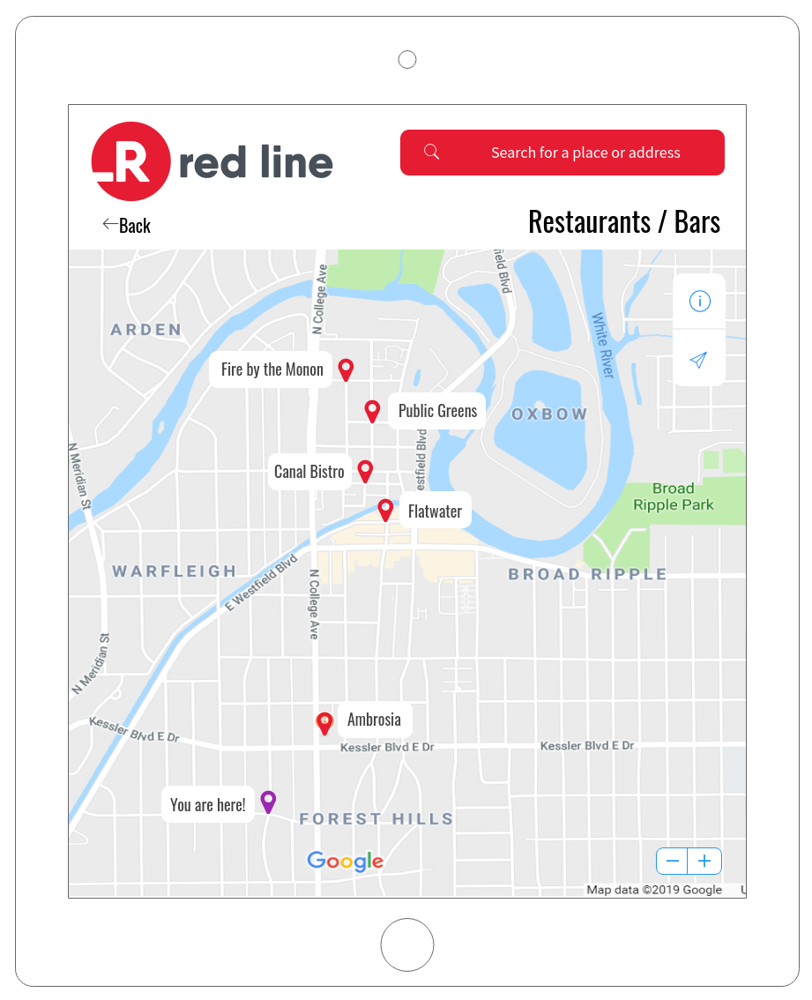
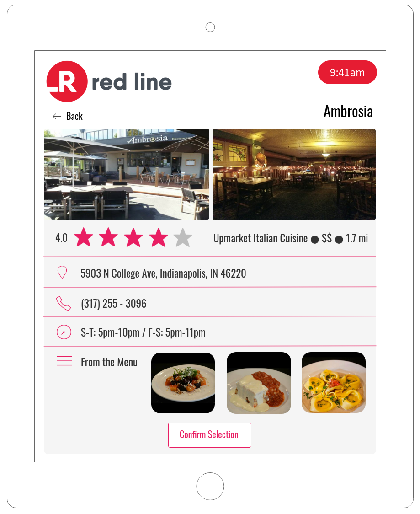
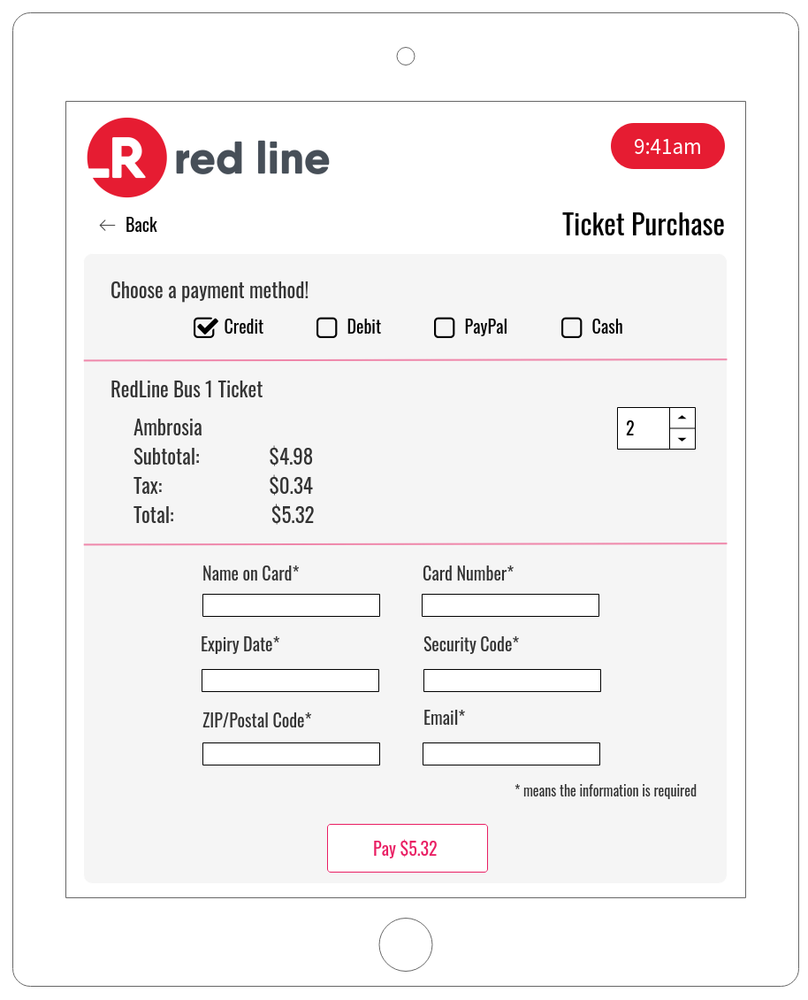
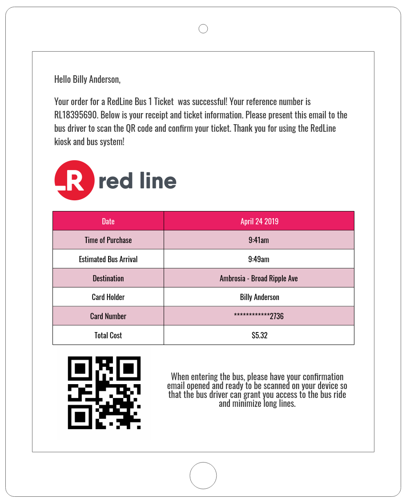

RedLine Application
I270 Introduction to Human-Computer Interaction Final Project, 2019
An original wireframe of an application using Mockflow.com. The RedLine is a new bus system that runs from downtown Indy to the University of Indianapolis. This fictional application was designed to enhance the user experience, allow them to search points of interests, and buy tickets. It features a map, search bar, info cards with star reviews, and multiple payment methods.


Category Selection
Restaurant Map
Location Info Card
Ticket Payment Page
Bus Stop Map
Sample Ticket Email